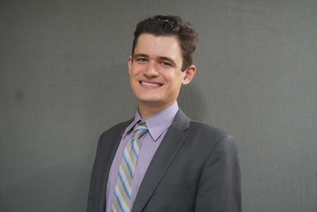

AG'">Aidan Gettemy
Ph.D. candidate in Mathematics, University of Texas at Dallas
Bayesian inverse problems · Uncertainty quantification · Surrogate modeling
I develop computational tools for uncertainty quantification in problems governed by physical systems. My work includes domain-decomposed Markov chain Monte Carlo methods for Bayesian inverse problems and surrogate models for expensive simulation tools. The applications of my research include fluid flow in porous media and wind energy. I am advised by Dr. Felipe Pereira and expect to finish my Ph.D. in February 2027.
Before I joined UTD, I studied cello performance and mathematics at Baylor University. As a cellist, I was drawn in by the complexity and dynamic patterns of mathematics. Thus, when I went on to pursue my graduate education I was most interested in applied mathematics and scientific computing, where the study of math and the visualization of physical processes and patterns go together. Away from the computer you will find me with a cello, or out running or hiking, birding, tending plants, making art, or reading.
I am grateful to have had the chance to work with many people who are generous with their time and ideas: my advisor, my collaborators at UTD, LNCC, the Roux Institute, and my fellow members of the SIAM student chapter.
Navigation
-
GitHub
Research code: Bayesian inversion, surrogate modeling, and wind farm data analysis. -
LinkedIn
Professional profile and the best place to connect. -
Research
Current projects. -
Publications
Papers, manuscripts under review, and work in preparation. -
CV
Education, experience, talks, teaching.